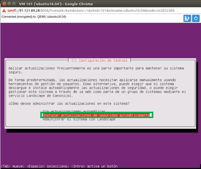

Para la instalación básica de GNU/Linux Ubuntu Server 16.04 se deben seguir los siguientes pasos:
1. Inicialmente escogemos el idioma que va a tener el sistema operativo.
2. Elegimos la opción de Instalar Ubuntu Server, con el fin de realizar la correcta instalación del S.O
3. Seleccionamos el país en el cual nos encontramos, para que el sistema reconozca el tipo de caracteres especiales del teclado
4. En este paso el usuario puede compruebar la configuracion del teclado del paso anterior.
5. Acá debemos escoger el país de origen de nuestro teclado.
6. Se selecciona la distribución del teclado.
7. En este paso se empieza a realizar la configuración de red del SO.
8. Seleccionamos la opción “No configurar la red en este momento” con el fin de seguir con la instalación y configura posteriormente.
9. Asignamos el nombre de nuestra máquina, en este caso “Ubuntu”
10. Creamos un usuario de tipo administrador de nuestro sistema.
11. Se ingresa el nombre del administrador de la cuenta administrativa creada anteriormente.
12. Se establece la contraseña de la cuenta administrativa, la cual posteriormente nos permitirá tener acceso al sistema y permisos temporales de súper usuario
13. Preguntan si se quiere cifrar el contenido de la carpeta personal, en este caso no se considera una opción factible debido a que será de uso educativo.
14. En la opción de partición de disco se escoge “Utilizar todo el disco” debido a que se está trabajando en una máquina virtual y no habrá otro SO.
15. El sistema pide confirmación para formatear los discos del mismo.
16. Se seleccionan los servidores que se van a preinstalar junto con el sistema operativo.

17. Se le pide al usuario que escoja la forma en que serán entregadas las actualizaciones.
18. Se instala el GRUB o sistema de arranque, en este caso solo existe un SO por cual no tendrá ningún problema, en caso de más de un SO se deben realizan las respectivas configuraciones para el arranque de los dos sistemas
19. Por último, se termina la instalación del sistema y se le pide al usuario reiniciar la máquina para acceder al sistema operativo previamente instalado.